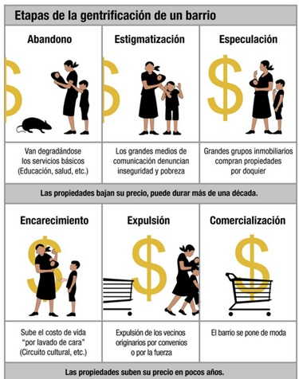

Procesos de gentrificación, arte y conservación
Adrián Pérez Ballesteros
¿Qué es la gentrificación?
La palabra gentrificación es una derivación del inglés gentrification, por lo que no existe referencia alguna en el diccionario de la Lengua Española. En el caso específico de esta investigación, fue realmente difícil encontrar fuentes serias para profundizar en el tema. Pese a ello, algunas referencias en línea mencionan que la raíz etimológica hace referencia al término gentry: clase social e histórica de origen inglesa de orden medio-alto. Dependiendo del texto, el término se puede referir a la castellanización del concepto en elitización, elitización residencial, gentrificación y/o aburguesamiento (García, 2001).
Gentrificación se define como las modificaciones o transformaciones que sufren sectores específicos (principalmente) en sus áreas centrales, provocando su readaptación, reapropiación y revitalización funcional además del cambio en la composición social de los habitantes que se desarrollan en ese entorno. De manera más específica, estas transformaciones afectan a los barrios populares con cierta trascendencia histórica y con importantes deterioros en sus edificaciones (García, 2001).
Actualmente existe una discusión académica para definir la castellanización que mejor se acople a los problemas de las comunidades desplazadas y los entornos modificados. Se tomará el término gentrificación en este ensayo, sin embargo, se considera importante seguir estudiando el proceso, así como sus resultados a nivel socio-cultural.
El concepto surge en la década de los setenta del siglo pasado para referir a la sustitución de cierta población, además del aburguesamiento de los sectores urbanos. Dicho concepto se le adjudica a la socióloga Ruth Glass (1912-1990) cuando describió la invasión de barrios obreros cercanos a Londres por individuos de clases medias y medias altas (1964). Esto implicaba la rehabilitación del espacio, por lo cual subió la plusvalía y con ello, el precio de la venta y renta de viviendas en la zona. En consecuencia, muchas personas que lograron crear el contexto y el paisaje de estos barrios se vieron obligados a abandonarlos por falta de recursos (Díaz, 2013). Los procesos de gentrificación podrían definirse como un problema de carácter socioeconómico, derivado de la expulsión de comunidades con pocos recursos de un espacio que originalmente ellos configuraron. Lo interesante de este fenómeno social radica en su vigencia —desde su desarrollo como concepto y fenómeno hasta nuestros días—, pues han pasado más de cuatro décadas y esto parece una tendencia a nivel mundial que no se detiene (Véase figura 1).

Figura 1. Fases de la gentrificación1.
Una constante en este proceso de supuesta rehabilitación de los barrios originarios es que sucede en áreas centrales de una comunidad, como en el caso de la Ciudad de México. Lo interesante radica en que se reconoce cierto carácter de autenticidad en estas zonas que llegan a ser atractivas para personas con mejores condiciones adquisitivas. En este sentido, debe existir una tenue línea entre los beneficios que encuentran las personas interesadas de clase media alta y alta frente a los supuestos o posibles deficiencias y carencias que puede sufrir el barrio. De alguna manera, el incorporarse a estas zonas puede brindarle al sujeto gentrificador un estatus dentro y fuera del sitio.
Como se puede vislumbrar, la creación de estas áreas populares tiene una entrañable relación con las dinámicas de producción-consumo pues en muchos casos el espacio se fue desarrollando en función de las necesidades socio-económico del momento.
Según varios estudiosos se puede entender a la gentrificación en diferentes fases o etapas:
De manera general, se puede hacer una ligera revisión histórica del contexto en el que surge el concepto de gentrificación. A nivel internacional existió un creciente desarrollo y especialización de la industria, consecuencia de las guerras y los avances tecnológicos, por lo cual, surgieron varias comunidades de obreros y trabajadores que subsisten mediante su trabajo en la producción de mercancías. De esta manera se crean nuevas comunidades específicas de la misma clase social cerca de sus centros de trabajo, cada una con dinámicas particulares. Posteriormente, a mediados del siglo, varias economías logran estabilizarse y generar un crecimiento socio-económico sorprendente, conocido como el Estado benefactor. Así, varias familias lograron mejorar el poder adquisitivo y escalar en la estratificación social. El inicio de los setenta implica el fin de este proceso que había durado más de cuatro décadas, lo que está directamente relacionado con la crisis del Estado, que deja de tener los recursos suficientes para sustentar a su población y brindarles los servicios básicos y necesarios, descuidando el cuidado de la gran mayoría de la gente. Posteriormente, un par de años más tarde se presenta el neoliberalismo con políticas sociales y gubernamentales más herméticas y menos aprensivas frente a la población. Aunado a esto, la globalización surge como un proceso económico, tecnológico político y cultural que propone la unión de los diferentes sectores del mundo mediante la economía y la cultura, expandiendo los mercados y capitalizando todo (Gomez, 2004 & Monsur, 2001). Como se puede observar, los procesos históricos son claves para entender la generación de los elementos de gentrificación. Actualmente parecería que este fenómeno permea de manera directa en todo el mundo. Se tienen registros de gentrificación en Europa, América y Asia, así como en grandes ciudades y pueblos. Un claro ejemplo que ilustra la réplica de esta problemática es la denominación de algunos de los Pueblos Mágicos (2001) a lo largo de toda la República Mexicana. Según la página de la Secretaría de Gobernación (2016) se entiende por pueblos mágicos a: El argumento de la Secretaría de Gobernación es que a través de este programa del gobierno se realizan subsidios para el mejoramiento de la calidad de vida, mediante el fomento de las inversiones que permitan el desarrollo de servicios, desarrollo social, así como la mejora de la infraestructura y de la imagen en beneficio de la comunidad (SEGOB, 2016). Cabe destacar el énfasis que le dan al mejoramiento de las condiciones en vías de recibir turistas y/o extranjeros, premisa que se puede ligar con la consolidación de la globalización en destinos tan apartados como pequeños pueblos a lo largo del territorio nacional. Quien suscribe ha tenido la oportunidad de visitar varios Pueblos Mágicos, de los que sobresalen aquellos que podrían ser identificados por el reconocimiento que hacen de elementos esenciales que lo destacan y que han perdurado en el tiempo. Existen comunidades que modifican sus dinámicas y su cultura por el subsidio que ofrece el programa. En otros casos, el estatuto de Pueblo Mágico homogeniza la diversidad previa que permitió al sitio llegar a dicha declaratoria. Figura 2. Esquema de espacio permeable-espacio gentrificable (Díaz Parra, 2013). Las características que se muestran en la figura 2 ejemplifican los elementos de una zona en potencia a ser gentrificada, entendiendo por espacio permeable a aquella zona o edificación que presenta deterioros y desvalorización por parte de quienes los habitan. En un primer vistazo, estos puntos me parecen directamente equiparables con las transformaciones que ha sufrido el Centro Histórico de la Ciudad de México en los últimos lustros. Para el desarrollo de este escrito se tomará el caso de esta área histórica como ejemplo medular para buscar una posible relación entre los procesos de gentrificación, el arte y la conservación del mismo, en un contexto que podría ser reconocido inmediatamente. Haciendo una revisión y comparación rápida, se puede identificar al Centro Histórico como una zona gentrificable por las siguientes razones: El Centro Histórico de la Ciudad de México es el espacio más grande y emblemático de América Latina; también constituye uno de los más importantes centros turísticos del mundo y el principal destino de paseo cultural en México. Dentro de este se encuentran algunos de los monumentos y tesoros patrimoniales apreciados por México y el mundo. En 1987 fue reconocido ante la UNESCO como patrimonio cultural de la humanidad. Contiene poco más de 1,500 edificios, entre templos, museos, hoteles, tiendas, galerías, teatros, parques y centros culturales. En él se puede observar la simbiosis histórico-social que rescata elementos prehispánicos, coloniales y modernos en su arquitectura (Secretaría de cultura, 2016). En 1990 surge el Fideicomiso Centro Histórico (FCH), en inicio con inversión privada y, posteriormente, en el 2002, se incorpora el gobierno de la Ciudad de México. El objetivo del fideicomiso es “promover, gestionar y coordinar entre los particulares y las autoridades competentes las ejecuciones de acciones obras y servicios que propicien la recuperación, protección y conservación del Centro Histórico de la Ciudad de México, buscando la simplificación de trámites para su consecución” (FCH, 2016). Desde entonces, el Centro ha vivido una serie de transformaciones que en primera instancia parecieron convertirlo en un lugar más seguro, con mejores servicios y digno de ser disfrutable para el turismo y los negocios inmobiliarios. Lamentablemente, estas transformaciones trajeron como consecuencia el movimiento de familias con pocos recursos fuera de esta zona. Lo mismo ha sucedido con los vendedores informales sobre la vía pública, y se han modificado las actividades que se realizaban en torno a este espacio. Muchos de los edificios han sido adquiridos por el fideicomiso el cual ha modificado de manera radical su funcionalidad, sin respetar su historicidad. Parece increíble encontrar supuestos trabajos de conservación en los cuales solo se preserva la fachada del edificio mediante una intricada estructura metálica, mientras que el resto de la arquitectura es eliminada. Un punto a reflexionar en este escrito es la relación existente entre los procesos de gentrificación que se viven en sitios como el Centro Histórico, y su facilidad o disposición para recibir y presentar diferentes manifestaciones artísticas, tanto nacionales como extranjeras. En este sentido, el Centro podría representar para algunos extranjeros la capital donde se concentra lo peculiar o exótico de una cultura emblemática como la mexicana, tan diversa y pluricultural. Inevitablemente surge el siguiente cuestionamiento: ¿La gentrificación trae consigo la creación, producción y exhibición de obras artísticas o, por el contrario, la existencia de círculos y piezas de arte promueven la enmarcación de zonas gentrificables? En la década de los noventa, destacaron varios extranjeros que llegaron al país, específicamente al centro de la capital, para experimentar con el espacio y en función de ello, generar nuevos discursos y obras artísticas. Un claro ejemplo de esto lo constituye Francis Alÿs. En 1997, este belga realiza una acción performática apropiándose del Zócalo de la Cd. de México. Dicha acción fue documentada en video en blanco y negro, con duración de 25 min., donde Francis guía a una manada de ovejas alrededor del asta bandera de la Plaza de la Constitución. Cuentos Patrióticos es su nombre y constituye una protesta y remembranza de los sucesos del movimiento estudiantil de 1968, cuando después de un día histórico de manifestación social en la plancha del Zócalo, el gobierno convocó de manera obligatoria a los burócratas que trabajaban en el Centro, en (supuesto) repudió a las movilizaciones del día anterior. Si existiese una relación, ¿la llegada de extranjeros con nuevas ideas es resultado de la gentrificación?, o, por el contrario, ¿los artistas de otros lados del mundo ayudaron a iniciar el proceso de gentrificación con la apropiación del espacio del Centro Histórico como núcleo artístico? (Véase figura 3). Figura 3. Alÿs, Francis, Fotograma de Cuentos patrióticos (1997)2. En el año 2012 se realizó el Festival All city canvas México, el cual reunió a nueve de los más reconocidos artistas urbanos del momento en todo el mundo para pintar en diferentes paredes de la zona centro de la ciudad. De los artistas seleccionados, solo dos eran mexicanos: Sego y Saner. Este festival se adueñó por una semana del centro de la Ciudad de México en el que podía observarse a los artistas ejecutando sus obras. La temática fue diversa y los resultados fueron interesantes, dándole un toque o cierto estilo a la ciudad. Dentro de las dinámicas del festival se estipuló que solo se protegerían los murales por 6 meses. Actualmente se conserva la gran mayoría de estos con algunos problemas de deterioro; como sea, ahora son parte de la ciudad. El belga Roa, es uno de los artistas del Street art más reconocidos mundialmente. El pintor, de identidad secreta, ha desarrollado un estilo único plasmando animales a gran escala, en blanco y negro. El ciclo de la vida es el eje principal de sus composiciones, considerando la muerte, la reproducción y la descomposición de los seres vivos. La fijación por otro tipo de entidades vivas surgió desde pequeño, cuando Roa buscaba y coleccionaba animales, vivos y muertos. El artista aboga mucho por permitir que el espectador tenga la libertad de interpretar su trabajo sin tener que dar una explicación o descripción precisas. A pesar de ello, los animales, son más universales —según el artista—, pues estos son comprendidos por todo tipo de público (niños, adultos y ancianos). Esto le permite comunicar más sobre las personas y el mundo. Los murales del belga suelen posicionarse sobre sitios abandonados y con cierta autenticidad. Cada una de las representaciones que selecciona Roa, refleja un detalle extraordinario, así como un vínculo con el contexto social en el que pinta y donde el concepto de libertad siempre es primordial (LaTorre, 2012). Así, el mural se ubica al norte de la zona centro, junto a un estacionamiento, el cual se encuentra escondido de algún modo (Véase figura. 4). Figura 4. Mural por Roa en México (2012). Pérez Ballesteros, 2016. Posiblemente la selección de la serpiente como personaje fundamental en la composición tenga relación con el símbolo nacional (haciendo alguna alusión a la serpiente que es devorada por un águila). La existencia de esta obra mural ha permitido que aficionados, turistas y curiosos deambulen por la zona en busca de la pintura. ¿Por qué razón algo que de origen es efímero se ha conservado por más de 5 años bajo las mismas condiciones que otros murales de arte urbano que en menos tiempo han desaparecido? Parecería que existe una relación entre ciertas obras reconocidas y pertenecientes a proyectos o movimientos innovadores, como es el caso del festival internacional All city canvas, y el valor que adquieren dichas manifestaciones dentro de un sitio, otorgando un status nuevo, diferente y mayor al sitio que lo resguarda. De esta manera, este tipo de expresiones artístico-culturales podrían focalizar mayor atención y recursos para su conservación de manera tal que garantice su perdurabilidad para seguir generando cierta esencia o prestigio a su zona. De manera general, las dos obras seleccionadas comparten elementos en común:
“localidades con atributos simbólicos, leyendas, historia, hechos trascendentes, cotidianidad, magia que te emanan en cada una de sus manifestaciones socio-culturales, y que significan hoy día una gran oportunidad para el aprovechamiento turístico”
Arte y gentrificación
Conclusión
En este sentido, considero que el centro de la Ciudad de México ha representado un escenario atractivo de experimentación y creación artística, difícil de concebir en otra parte de la ciudad o del país. ¿Existirá, entonces, alguna relación proporcional entre los procesos de gentrificación que sufre un sitio y su vinculación con las dinámicas actuales en torno al arte contemporáneo? Creemos que sí, pues en las actuales capitales del país, con gran mercado y producción de arte se encuentra una correlación con posibles áreas gentrificadas (Guadalajara, Monterrey, Oaxaca, Ciudad de México, por decir algunas).
Esto es interesante pues permite ver qué tan vinculados estamos a estos espacios, a sus trasformaciones, y cómo nos desenvolvemos dentro de ellos; seguramente nos hemos relacionado más de una vez con sitios, lugares y obras resultantes del proceso de gentrificación. Es importante comprender la totalidad del fenómeno social, para entender sus futuras y posibles consecuencias. Aún falta por investigar más y encontrar la relación entre el arte y los procesos de gentrificación. Metafóricamente hablando, se podrían comparar las expresiones artísticas con la selección artificial de las especies, la cual produce un individuo sumamente bello y estilizado, pero que a la larga presenta problemas de perdurabilidad. ¿Qué tanto puedo durar un monumento u obra de arte que no presenta una manera diferente de vinculación con la sociedad y su entorno? ¿Se generan nuevas y distintas dinámicas?
Hablando de las expresiones artísticas, sería prudente incluir a los círculos de especialistas encargados del estudio y conservación del arte dentro de este tipo de zonas, los cuales están comprometidos con la salvaguarda de este patrimonio desde diferentes áreas (esferas federales, estatales, institucionales, públicas y/o privadas). En este sentido, me parece que tanto el arte como su conservación estarían atendiendo a una minoría que establece las pautas de lo que debe hacerse, y en qué áreas, dejando sitios con relevancia histórico-cultural fuera de contacto, negando las posibilidades de generar y conservar tanto de su patrimonio como el arte que producen.
Finalmente, existe resistencia de algunos sectores dentro de las áreas en proceso de gentrificación, lo cual puede significar que algo de autenticidad perdura en esos grupos en constante cambio. Sería interesante identificar el grado de conciencia frente a la otredad y la implicación de resistencia que poseen estos pequeños grupos.
Agradecimientos
El desarrollo de este escrito no se hubiera podido realizar sin el apoyo del Seminario Taller de Restauración de Obra Moderna y Contempóranea (STROMC). Por esa razón, se extiende un gran reconocimiento y agradecimiento a la maestra Ana Lizeth Mata Delgado, titular del STROMC, quien ha trabajado por varios años para la consolidación de un espacio dentro de la ENCRYM y el INAH para el estudio y reflexión de las manifestaciones culturales y artísticas de las últimas décadas. Asimismo, se agradece el apoyo de la maestra Claudia María Coronado García, por su comprensión, apoyo y vitalidad que trasmitió al momento de idear este escrito. Finalmente, pero no de menor importancia, mi inmensa gratitud a la maestra María Josefa Ortega Erreguerena, quien desplegó, como por arte de magia, las condiciones necesarias para la comprensión, investigación y la exploración del arte mexicano contemporáneo.
Referencias
García Herrera, Luz Marina.
(2001). Elitización: propuesta en español para el término de gentrificación. Revista bibliográfica de geografía. Vol. VI, Núm. 332, Barcelona. Recuperado de http://www.ub.edu/geocrit/b3w-332.htm [07 de noviembre del 2016].
Gómez, J. & et. Al.
(2004). Historia Universal. México: Pearson Addison Wesley.
Díaz, Ibán.
(2013). La gentrificación en la cambiante estructura socioespacial de la ciudad. Revista bibliográfica de geografía. Vol. XVIII, Núm. 1030, Barcelona. Recuperado de http://www.ub.edu/geocrit/b3w-332.htm [07 de noviembre del 2016].
Mansur, J. & et.al.
(2001). De la Revolución mexican al desarrollo estabilizador. México: ITAM.
LaTorre, Tamara.
(2012). Roa: Belleza en la vida, la muerte y la descomposición en Los murales hablan, Festival Internacional de Arte Urbano. Recuperado de https://losmuroshablan.wordpress.com/2012/10/10/roa-belleza-en-la-vida-la-muerte-y-la-descomposicion/ [13 de Enero del 2017].
Secretaría de cultura.
(2016). Centro histórico de la Ciudad de México. Recuperado de http://www.cultura.gob.mx/turismocultural/destino_mes/cd_mexico/ [07 de noviembre del 2016].
Secretaría de Gobernación.
(2016). Pueblos mágicos. Recuperado de http://www.gob.mx/sectur/articulos/pueblos-magicos-herencia-que-impulsan-turismo [07 de noviembre del 2016]:
YTM.
(2015). Etapas en la gentrificación de un barrio en Yo me tiré al monte lo mejor de lo peor. Recuperado de http://www.yometiroalmonte.es/2015/04/12/etapas-gentrificacion-barrio/ [07 de noviembre del 2016].
Zabludowick Collection.
Francis Alÿs. Recuperado de http://www.zabludowiczcollection.com/collection/artists/view/francis-alys [12 de marzo de 2017].
Notas al pie
1 Imagen tomada de: http://www.yometiroalmonte.es/2015/04/12/etapas-gentrificacion-barrio/
2 Imagen tomada de http://www.zabludowiczcollection.com/collection/artists/view/francis-alys
Como citar esta colaboración:
Apellido, nombre (año), “Título del artículo”, en Archivo Churubusco, año 1, número 2, disponible en -dirección en internet-, consultado -día, mes, año-.
Ir al cielo